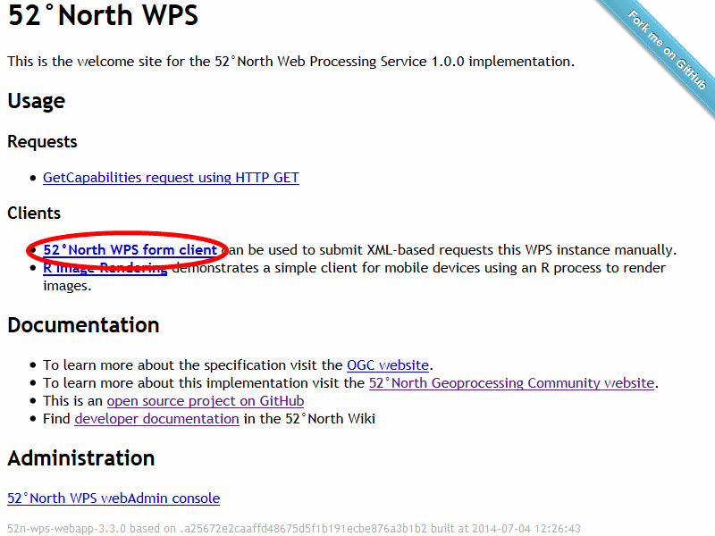
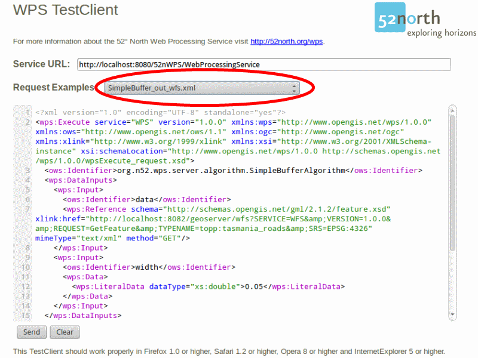
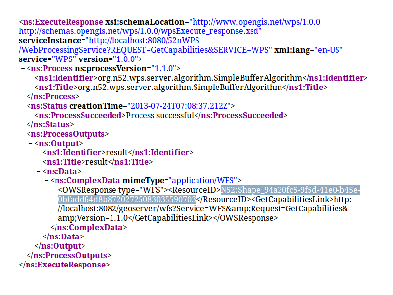
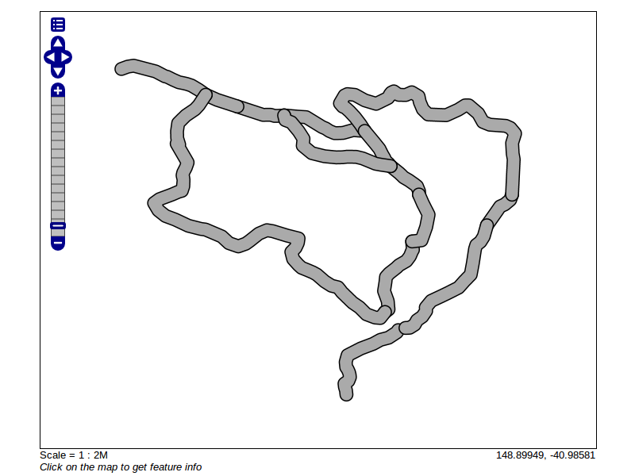

Guide de démarrage rapide de 52 North WPS¶
52°North WPS est un cadre pour le géotraitement web de données (géospatiales). Le service implémente le standard OGC Web Processing Service 1.0 interface.
Ce guide de démarrage rapide décrit comment traiter de la donnée et stocker le résultat dans un autre service web en utilisant des opérations WPS.
Contents
Démarrer 52°North WPS¶
Pour lancer 52°North WPS dans le Live DVD, àllez à ou utilisez le lien direct.
La page d’accueil de52n WPS va apparaître.

(Si le service web n’est pas atteignable, essayez de démarrer l’engin de miniserveur Tomcat en suivant les étapes à la fin de fin du gui de démarrage rapide SOS.)
Obtenir des informations sur le service¶
Contrôler les capacités de 52°North WPS avec cette requête:
Traiter les données¶
Cliquer sur le lien pour ouvrir le client de test de 52nWPS.
Assurez-vous que GeoServer est lancé puisque que la démonstration requiert des données depuis l’installation locale de GeoServer.
Pour cela, essayer d’ouvrir la page http://localhost:8082/geoserver/web. Si la page n’est pas accessible, sélectionner dans le menu. GeoServer devrait être fonctionnel après quelques instants.
Sélectionner la requête d’exemple « SimpleBuffer_out_wfs.xml » dans la liste déroulante:
Pousser le bouton Send et la requête sera transmise à 52°North WPS ce qui générera un tampon autour des routes principales de Tasmanie avec une largeur de 0.05 degrés et stockera le résultat dans GeoServer.
Copier le ResourceID de la réponse. C’est le nom de la couche dans GeoServer. Ajouter l’identifiant (ID) à la requête suivante: http://localhost:8082/geoserver/wms?service=WMS&version=1.1.0&request=GetMap&styles=&bbox=145.14757902405984,-43.47330297262748,148.32274986232298,-40.80286290459129&width=512&height=430&srs=EPSG:4326&format=application/openlayers&layers=Ajouter-ResourceID-ici Vous devriez obtenir le résultat suivant:

{kind=link}
{kind=link}
{kind=link}
{kind=link}
Choses à essayer¶
- Essayer d’autres exemples de requêtes à partir de la liste déroulante du client de test WPS.
- Vous pouvez aussi installer le plugin WPS pour QGIS et l’essayer avec 52°North WPS.
Ensuite ?¶
- Créer vos propres géotraitements et les exécuter depuis des clients variés.
- Paramétrer le WPS pour exécuter des géotraitements GRASS GIS 7.
- Paramétrer WPS pour exécuter des scripts R comme traitements.
Disponible dans le wiki 52°North: https://wiki.52north.org/Geoprocessing/GeoprocessingTutorials
Pour des questions complémentaires, vous contacter la liste de diffusion de 52°North WPS: